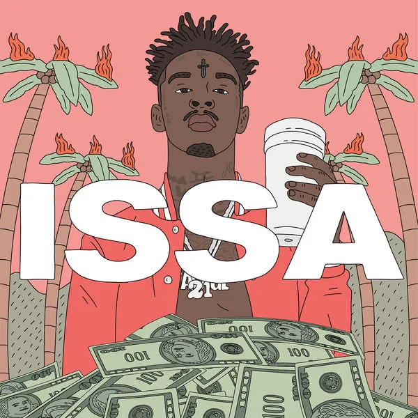

21 Savage
21 Savage, właśc. Shéyaa Bin Abraham-Joseph (ur. 22 października 1992 w Londynie) – angielski raper, autor tekstów i producent muzyczny..

Albumy
Życiorys
Shayaa Bin Abraham-Joseph urodził się 22 października 1992 roku w Brixton w Londynie. Został wychowany przez matkę Heather, która jest z pochodzenia dominikanką i ojca który jest pochodzenia haitańskiego. Ma czterech braci i sześć sióstr, jedna z nich zmarła w strzelaninie w trakcie transakcji narkotykowej. Razem z rodziną przeniósł się do Stanów Zjednoczonych w 2004 roku, którą to informację ukrywał przed fanami, jednak zatrzymanie przez Amerykański Urząd Imigracyjny na początku 2019 potwierdziło, że Abraham-Joseph pochodzi z Wielkiej Brytanii. W siódmej klasie 21 Savage dostał na stałe zakaz wstępu do każdej szkoły w okręgu szkolnym w hrabstwie DeKalb z powodu posiadania broni palnej. Zaczął uczęszczać do szkół w okolicach Atlanty, zanim został wysłany do ośrodka zatrzymań dla młodzieży. W 2013 roku, w swoje 21 urodziny, Abraham-Joseph został postrzelony sześć razy, a jego najlepszy przyjaciel został zabity podczas napadu.